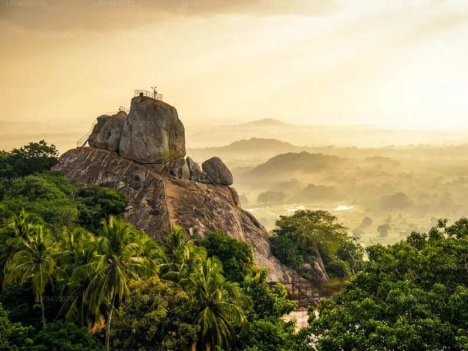
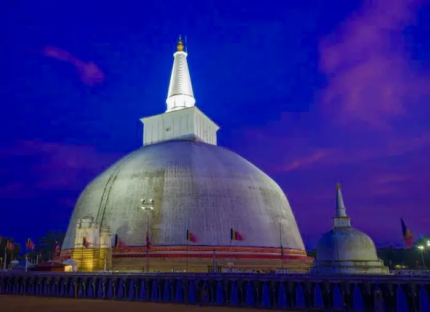

Minitale is considered to be the birthplae of buddhism in Sri Lanka. It is where Arhat Mahinda Thera met king Devanampiya Tissa , who converted to buddhism after this meeting. Mihintale is also significant because it is one of the Solomasthana(16 places) the Lord Buddha has visited here in Sri lanka
Ruwanwelisaya Dagoba is a religiously significant historical site found in the ancient city of Anuradhapura. it is one of the "atamasthana" buddhists visit while on pilgrimage in this ancient city. Ruwanwelisaya was built in 140 BC by king Dutugemunu and was completed by his brother king Saddhatissa, after the demise of king Dutugemunu.
the jaya sri maha bodhi of anuradhapura is the southern branch of the scared Bodhi tree of india under which Lord Gautama Budhha attained enlightment. the sapling of jaya sri maha bodhi was planted in the sacred maha megha vana royal park ,by king Devanampiya Tissa after it was brought to Sri lankaby Arahat Sanghamitta Maha Theree guided by Arahat Mahinda Maha Thero. the Jaya sri maha bodhi of anuradhapura is now 2247 years old sacred tree.